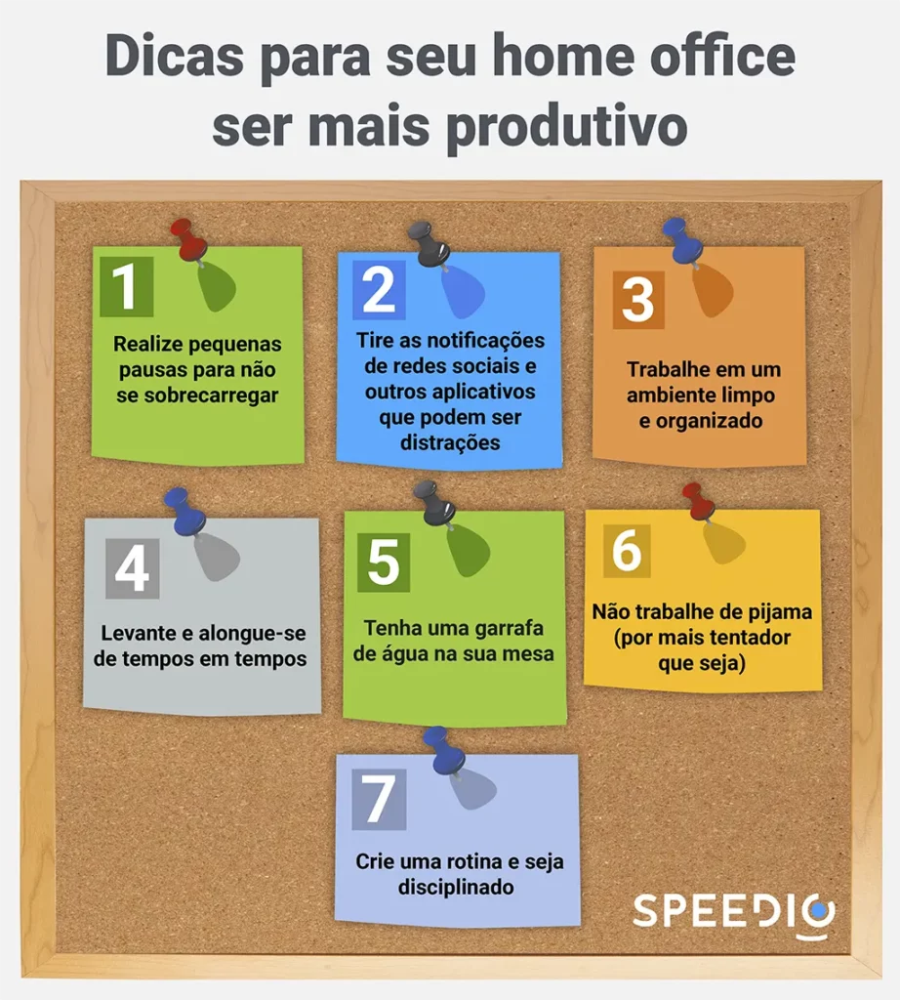

Artigos da Categoria
Supere as dificuldades do trabalho remoto
Neste post você verá
As dificuldades do trabalho remoto existem e são muito comuns, mas também existem formas de superá-las e nós vamos mostrar como.
Com o aumento do trabalho remoto em todo o mundo, muitas pessoas estão descobrindo que trabalhar em casa tem seus desafios. É fácil ficar distraído e perder a concentração, o que pode levar a uma diminuição da produtividade. Felizmente, existem vários hacks que podem ajudá-lo a ser mais produtivo no home office.
O que é trabalho remoto e como funciona?
O trabalho remoto é uma forma de trabalho em que o funcionário realiza suas tarefas fora do ambiente tradicional do escritório.
Ele pode ser realizado de várias maneiras. Algumas pessoas trabalham em tempo integral em suas casas ou em espaços de coworking, enquanto outros trabalham em tempo parcial e complementam suas atividades com um emprego tradicional em um escritório.
Algumas empresas oferecem o trabalho remoto como uma opção de flexibilidade para seus funcionários, enquanto outras empresas são totalmente remotas e não têm escritórios físicos.
O trabalho remoto é possível graças à tecnologia. A maioria dos trabalhadores remotos precisa de um computador, conexão à internet e software de comunicação para realizar suas tarefas. Isso permite que as pessoas trabalhem em qualquer lugar do mundo, desde que tenham uma conexão confiável com a internet.
Existem muitas vantagens em trabalhar remotamente. Uma das principais é a flexibilidade. O trabalhador remoto pode definir seus próprios horários de trabalho e pode trabalhar de qualquer lugar que escolher.
Isso pode permitir uma melhor conciliação entre trabalho e vida pessoal. Além disso, trabalhar remotamente pode eliminar a necessidade de se deslocar para o trabalho, economizando tempo e dinheiro.
Outra vantagem é a produtividade. Muitas pessoas acham que trabalhar em casa é menos estressante do que trabalhar em um escritório e podem ser mais produtivas como resultado.
No entanto, o trabalho remoto também apresenta alguns desafios. Uma das principais desvantagens é a falta de interação social. No trabalho remoto, pode ser necessário ser mais proativo para manter contato com colegas de trabalho e criar conexões.
Trabalhar em um escritório oferece a oportunidade de interagir com colegas de trabalho, o que pode ajudar a criar relacionamentos profissionais e pessoais. Além disso, temos a questão do aprendizado ao vivo, onde os colaboradores aprendem um com o outro no dia a dia.
Outro desafio é a necessidade de autodisciplina. Como o trabalhador remoto tem mais liberdade para definir seus próprios horários, pode ser fácil se distrair com outras atividades e não cumprir prazos. principalmente para quem tem animais domésticos e crianças em casa. É fácil perder o foco do que está fazendo.
Crie um espaço de trabalho dedicado
Um dos principais desafios do home office é conseguir separar o trabalho da vida pessoal. Para ajudar a manter a concentração, é importante criar um espaço de trabalho dedicado. Isso pode ser uma mesa em um canto tranquilo da casa ou um quarto separado. O importante é que seja um espaço dedicado ao trabalho e que possa ser mantido organizado.
Mantenha um horário regular
Outro desafio do home office é manter um horário regular. É fácil se distrair com tarefas domésticas ou com outras distrações em casa. Para ajudar a manter a produtividade, tente manter um horário regular de trabalho. Isso pode incluir acordar e dormir em horários específicos, além de estabelecer horários regulares para as refeições e pausas durante o dia.
Utilize ferramentas de produtividade
Existem várias ferramentas de gestão e produtividade que podem ajudá-lo a manter o foco e ser mais eficiente no trabalho remoto. Alguns exemplos incluem aplicativos de gestão de tempo, extensões de bloqueio de sites e aplicativos de anotações. Ao encontrar as ferramentas certas para você, você pode aumentar sua produtividade e diminuir as distrações.
Faça pausas regulares
Embora possa parecer contra-intuitivo, fazer pausas regulares pode ajudá-lo a ser mais produtivo no home office. Ficar sentado o dia todo pode levar a dores nas costas e nos olhos, além de diminuir a concentração. Tente fazer pausas regulares para se levantar e caminhar, além de fazer exercícios de alongamento para ajudar a manter a energia.
Comunique-se com seus colegas de trabalho
Uma das maiores desvantagens do home office é a falta de interação social. Para ajudar a combater isso, é importante manter contato regular com seus colegas de trabalho. Isso pode incluir vídeo chamadas, e-mails e mensagens instantâneas. Ao manter um bom relacionamento com seus colegas de trabalho, você pode se sentir mais conectado e motivado no trabalho remoto.

Ferramentas de produtividade para superar as dificuldades do trabalho remoto
Felizmente temos uma gama de ferramentas disponíveis que podem ajudar a melhorar a produtividade no trabalho home office, tanto para quem trabalha no B2B quanto no B2C.
Nós desenvolvemos um artigo que pode te ajudar na escolha de uma plataforma B2B para vendas. Lá, você vai encontrar uma série de características e qualidades necessárias para que uma ferramenta de vendas precisa ter.
Ferramentas de gerenciamento de tarefas:
Existem várias ferramentas de gerenciamento de tarefas disponíveis, como o Trello, ClickUp, Asana e Todoist. Essas ferramentas podem ajudar a organizar suas tarefas diárias, definir prioridades e acompanhar o progresso.
Aplicativos de bloqueio de distração
Se você se distrai facilmente com as redes sociais ou outras distrações online, existem aplicativos de bloqueio de distração que podem ajudar. Ferramentas como Cold Turkey e StayFocusd podem bloquear sites específicos ou aplicativos durante um período de tempo determinado para que você possa se concentrar em suas tarefas.
Ferramentas de videoconferência
As reuniões virtuais são uma parte importante do trabalho home office. Ferramentas como o Zoom, Google Meet e Microsoft Teams permitem que você realize reuniões online com facilidade e eficiência.
Aplicativos de monitoramento de tempo
Se você tem dificuldade em gerenciar seu tempo, aplicativos de monitoramento de tempo como o RescueTime e o Toggl podem ajudar. Essas ferramentas podem rastrear quanto tempo você gasta em tarefas específicas e fornecer relatórios detalhados sobre seu uso do tempo.
Aplicativos de gerenciamento de e-mail
Se você recebe muitos e-mails diariamente, pode ser difícil manter sua caixa de entrada organizada e gerenciável. Aplicativos de gerenciamento de e-mail, como o Inbox by Gmail e o Spark, podem ajudar a organizar seus e-mails por prioridade, tópico ou remetente.
Ferramentas de compartilhamento de arquivos
Se você precisa compartilhar arquivos com colegas de trabalho ou clientes, ferramentas de compartilhamento de arquivos, como o Dropbox e o Google Drive, podem ajudar a tornar o processo mais fácil e eficiente.
Ferramentas de automatização
Ferramentas de automatização, como o Zapier e o IFTTT, podem ajudar a automatizar tarefas repetitivas, como o envio de e-mails ou o agendamento de postagens em mídias sociais, para economizar tempo e aumentar a produtividade.
Outra ferramenta que vem chamando muita atenção é o ChatGPT. A inteligência artificial consegue criar textos incríveis em questão de segundos e pode te ajudar a escrever e-mails ao longo do dia. Desenvolvemos um artigo que explica o que é ChatGPT e como pode te ajudar além do curso Venda mais com ChatGPT, que vai te ensinar a tirar o melhor proveito dessa ferramenta.
Trabalhar em casa pode ser um desafio, mas com as estratégias certas, você pode aumentar sua produtividade e eficiência. Ao criar um espaço de trabalho dedicado, manter um horário regular, utilizar ferramentas de produtividade, fazer pausas regulares e manter contato com seus colegas de trabalho, você pode tornar seu home office mais produtivo e agradável.